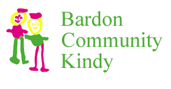

	<header id="header" class="site-header">
        <nav id="navbar" class="site-navbar navbar navbar-static-top" role="navigation">
          <div class="container">
            <div class="navbar-header">
              <button type="button" class="navbar-toggle" data-toggle="collapse" data-target="#navbar-collapse-1">
                <span class="sr-only">Toggle navigation</span>
                <i class="fa fa-bars"></i>
              </button>
              <a href="index.html"></a>
            </div>
            <div class="collapse navbar-collapse" id="navbar-collapse-1">
              <ul id="navigation" class="nav navbar-nav navbar-right">
                <li><a href="events.html">CALENDAR</a></li>
                <li><a href="roster.html">ROSTER JOBS</a></li>
                <li><a href="twyc.html">TWYC</a></li>
                <li><a href="fair.html">FAIR</a></li>
                <li><a href="links.html">LINKS</a></li>                            
              </ul>
            </div>
          </div>
        </nav>
      </header>
